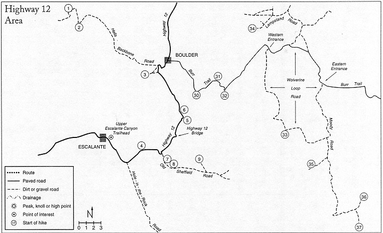
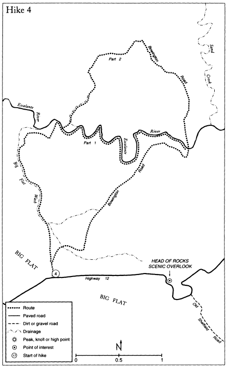

Utah Highway 12 starts in the town of Torrey and ends near the town of Panguitch to the southwest. The portion of the highway covered in this guide is from Escalante to Boulder. Highway 12 effectively cuts the Escalante region into two distinct areas: the mountain canyons that start on the Aquarius Plateau and the canyons of the lower desert region.
The Highway 12 area is a land of expansive views and endless slickrock. Travel and automotive magazines have rightfully called it one of the most scenic drives in America. For the backpacker and explorer, the highway provides easy all-weather access to the backcountry. The routes that start from the highway should be considered first when the weather is lousy and the dirt roads have turned to gumbo.
Indians of the late Basketmaker II Period (about A.D. 500) were the first to settle in the Highway 12 area. They left evidence of their occupancy in the form of pictograph panels high on the walls of lower Calf Creek Canyon.
Anasazi and Fremont Indians proliferated during the Pueblo II and III periods (A.D. 900 to 1300). The high benches now crossed by the highway supported an abundance of deer and bighorn sheep. Indians spent extended periods on vantage points chipping arrowheads and other stone tools; lithic scatters are found everywhere.
Cattlemen from towns to the north of Boulder were the first to use Boulder Valley, in 1879. The first permanent inhabitant settled there in 1887. It was about that time that Escalante ranchers started to graze their animals in Boulder Valley.
The first road between the towns of Boulder and Escalante was the Old Boulder road. It started as a rough trail that was slowly improved over a period of years to the point that wagons and, later, automobiles could use it. Starting from Escalante, the Old Boulder road crossed Big Flat and dropped to the Escalante River just below the mouth of Calf Creek. The road then went downriver for several hundred yards, exited the canyon, and followed a tortuous path up the cliffs to Haymaker Bench. After crossing the bench, the Hogback, and New Home Bench, the trail descended into Boulder.
The difficulties the pioneers had in traveling this road were
enormous. Early users planned on four to seven days from Escalante to Boulder, camping en route. To negotiate the roughest sections, wagons were unloaded or even taken apart. Bad weather often delayed passage. One pioneer woman, Sally May King, is quoted as saying, "The man who found the route for this road should have a medal, or else be killed" A companion then exclaimed: "Kill him, damn him. That's what I say."
By 1914 an alternate route from Haymaker Bench across Dry Hollow and Boulder Creek to lower Boulder had been established. In 1924 this rough path was improved into a good wagon road. It was called the Claude V. cutoff road, named for Claude Vincent Baker, a Boulder rancher. This road shortened the trip from Escalante to Boulder by a day and became the standard route for several years. (Hike #6 follows a section of the Claude V. cutoff road.)
As the towns of Escalante and Boulder grew, both the Old Boulder road and the Claude V cutoff proved inadequate. In 1934 the Civilian Conservation Corps (CCC) started work on an all-weather, one-lane "lower road" between the two towns. This road, which became Highway 12, followed some sections of the Old Boulder road but diverged from it by following lower Calf Creek and then going directly up the steep cliffs to Haymaker Bench. A one-lane bridge, which cost $5,000, was built across the Escalante River. This road was a huge undertaking and was not finished until 1940. Widening and paving occurred in spurts and the present paved configuration was not completed until the mid-1980s. The original one-lane bridge across the river was replaced by a two-lane bridge in 1995.
Harry Aleson and Georgie White
The First to Run the Escalante
Why are whitemen always discovering things and places that natives have known for ages? Just allow time enough, and there may come a day in the distant future when a whiteman reports the discovery of the Pyramids in a barren land once thought to have the name of:
EGIPTH.
Harry Aleson, 1959
It was an inauspicious beginning for the great river runners Harry Aleson and Georgie White. According to Aleson's notes, May 24, 1948, started normally. Harry and Georgie spent the morning visiting friends and buying groceries in Escalante. Their intent was to be the first to run the Escalante River. They would start at the Highway 12 bridge and paddle to the then still free-flowing Colorado River.
By mid-afternoon on that hot spring day they had provisioned their crafta surplus seven-man U.S. Navy raftand had set it in the river. But high water was not with them. Harry wrote: ''We left directlyfor Lees Ferry (?) Almost 40 feet after we started in a narrow, shallow poolwe were aground. So, out into the river (?), and pullover the rocks,and sandbars,riffles,on and off every few minutes until near dark. Whenever we could, we would sit on the opposite ends of the boatand guide by foot. Believe we got about 4 miles in 4 hours."
Harry Aleson was born in 1899 in Waterville, Iowa, where he spent his formative years. In 1918 he enlisted in the U.S. Army Signal Corps and spent the World War I years in France. A plane he was in crashed, and his injuries, although not exceptionally debilitating, entitled him to a full pension.
After returning from France, Aleson finished high school and several years of college, then migrated to the Southwest while working as a geophysicist in the oil fields. In 1939 he was introduced to canyon country while on a boat trip on Lake Mead. That trip was the start of a thirty-year love affair with the Colorado River and its side canyons. Until his death in 1972, Aleson devoted most of his time to guiding river trips on the Colorado River and exploring this remarkable province on foot.
Harrv Aleson was interested in all aspects of the canyons he visited. His extensive correspondence, now housed at the Utah State Historical Society library in Salt Lake City, provides an intimate view of those early explorations. Correspondence flew back and forth between Aleson and his peers, letters that often noted details on the discovery of a new canyon, arch, or bridge, a historical tidbit, or even a new row of Moqui steps or an Indian ruin. His friends in-
cluded the legendary boatman Otis "Dock" Marston; Stella Ruess, Everett's mother; and then Arizona Senator Barry Goldwater.
Georgie White may have felt a bit out of place on the Escalante River. While Harry Aleson had spent a considerable amount of time exploring Glen Canyon and its tributaries, this was Georgie's first trip away from her first love, the Grand Canyon. Georgie de Ross was born in Chicago in 1911. After she married Harold White, the restless couple bicycled from New York to California in 1936, a remarkable feat at the time. During the war, Georgie joined the Women's Auxiliary Flying Squadron. In 1944 her daughter Sommona died in a bicycle accident. Devastated by the death, Georgie turned to the outdoor world for solace, joining the Sierra Club and participating in many of its outings.
In 1945 Georgie met Harry Aleson at one of his Grand Canyon slide shows. Their first adventure together was a float trip down the lower end of the Colorado River in the Grand Canyonwithout a boat. The couple wore life vests and swam for eighty miles to Lake Mead.
Even with their butt-bumping start, Harry and Georgie decided to continue down the Escalante River. Aleson wrote: "The second day was tougher than the firstso the thirdso the fourth. We battled the rocky, shallow places; many, many fast chutes of white water. We portaged many times."
On the fourth day their raft hit a boulder and flipped. Now in the water with their gear floating down the fast-moving river, Aleson and White "scrambled about in the churning water, hugging and puffing, choking, coughing, gagging, . . . grabbing things drifting by . . . We repacked, reloaded, and went on." Seven days from the start Harry Aleson and Georgie White finally reached the mouth of the Escalante River at Glen Canyon. Another day was spent on the Colorado River floating to their takeout point at Lee's Ferry.
A week after the trip, Harry wrote his friend Lou Fetzner: "I hereby predict that the Escalante Creek (?) run will be repeated but once in our lifetimes, and that only if you and I make it in 1949, for movies." Aleson and Fetzner did make that second trip, over eight days in late May 1949.
Aleson's third and final trip down the Escalante River was in June 1950. Instead of starting at the Highway 12 bridge, the third expedition began at the mouth of Harris Wash. It is interesting now to note that the group drove down Harris Wash to the river. Aleson was joined on this trip by Randall and Cyria Henderson, Georgie White, and Charles Lindsay.
Randall Henderson was the publisher of Desert Magazine. After the trip Henderson wrote an article about their adventures. In it he said: "We shoved out into the currentand 50 yards downstream
the boat grounded in a rocky riffle. We got out to push and pull the rafts over the rocksand never returned to the boats as passengers for eight days. The water that was expected to swell the stream flow as we continued our journey never appeared . . . The oars we carried were never unleashed until we reached the Colorado River."
Although the trip was exceptionally difficult for the five-person team, Henderson considered it a success. In summation he wrote: "Perhaps in a less colorful setting the arduous labor of this journey would have made it a grim, dismal experience. But not in Escalante Canyon. The red Wingate and the Navajo sandstone walls which towered above us fringed with the deep green of junipers and pinyon were ever-changing backdrops of fantastic sculpturing . . . In such a setting, with congenial companionsI never heard an unkind word, even when the going was very toughwe trudged along, dragging our boats and feeling that here was an experience which would leave pleasant memories long after the tired muscles had been forgotten."
The Escalante River is rarely in "nick" for a river run. Flow rates high enough to float a small boat only happen every four or five years. Often one must ride the crest of the spring runoff and hope it does not subside when partway down. Rafts are too large for this small river and most negotiate its tortuous course in kayaks or single-person inflatables.
The standard put-in for a run down the Escalante River is at the Highway 12 bridge and the normal takeout is via Crack-in-the-Wall to the Fortymile Ridge trailhead. Plan on seven to nine days for the trip. Familiarize yourself with other exit routes out of the canyon just in case things do not go as planned. The shortest optional exit is Fence Canyon to the Egypt trailhead.
It takes most river runners two trips over the course of a long day to carry their gear from the river to the Fortymile Ridge trailhead. If you are lucky, willing hikers may give a hand. A forty-foot rope will help pull boats up the cliff at Crack-in-the-Wall.
Access to Hikes #4 through 9.
Provides access to the Hells Backbone road, Hole-in-the-Rock road,
Old Sheffield road, and the Burr Trail.
Maps-Escalante, Dave Canyon, Tenmile Flat, Calf Creek, and
Boulder Town.
Highway 12 is the major road cutting across Escalante country. All of the hikes presented in the guide either originate along the highway or from roads that branch from it. Since Highway 12 does
have mileposts along it, they are used in this road section. (Mileposts are not used in any of the other road sections in this guide.) The road is paved and is suitable for all vehicles. Side roads lead to camping near the highway. Mileage starts at Escalante Outfitters in the town of Escalante. (See Map Five.)
59.7
(Escalante map.) At Escalante Outfitters. Follow the highway east.
60.2
Signed Hells Backbone road to the left (N). This road provides access to Hikes #1 through 3. See the Hells Backbone Road Section for details.
61.0
Signed "Escalante Trailhead Jct" to the left (N). This road provides access to the upper Escalante Canyon trailhead.
0.0
At Highway 12. Go north.
0.1
Pass the cemetery on its right. Cattle guard. The road turns east.
0.3
"Tee." Go left (NW).
0.5
"Y" Go left (NW). The road ahead gets rougher. Light-duty vehicles may not be able to make it to the trailhead.
0.9
Large, steep parking circle at the trailhead. The head of Navajo-walled Escalante Canyon is plainly visible to the north-northeast.
Digression: A trail, starting at a hiker's maze, leads across private property (do not leave the trail) to the river. A trail register is located near the river. For those hiking down the river to the Highway 12 bridge, it will take 3.5 to 4.5 hours to reach the mouth of Death Hollow, 2.0 to 3.0 more hours to reach the mouth of Sand Creek, and another 1.0 hours to reach Highway 12.
64.8
(Dave Canyon map.) Signed Hole-in-the-Rock road to the right (SE). This road provides access to Hikes #10 through 29. See the Hole-in-the-Rock Road Section for details.
68.0
(Tenmile Flat map.) Start of Big Flat Wash, the Escalante River, and the Bowington road Hike #4. Park off the road near the mile 68 signpost. You are at the red 20 in the upper left corner of the map and are in the Carmel Formation.
69.4
Top of a hill. A track to the left (E) marks the start of a section of the Old Boulder road, which diverges from Highway 12.
Digression: For those wishing to hike this section of the Old Boul-

der road, park off the track near the highway. Follow a track to the right (E). In short order the track descends a steep cliff. The way is easy to follow and ends at mile 73.1 on Highway 12. Plan on 1.5 to 2.0 hours one-way. This is a delightful and easy hike suitable for most.
69.8
Head of Rocks Scenic Overlook on the left. Great views.
70.5
Old Sheffield road to the right (SE). This road provides access to Hikes #7 through 9. See the Old Sheffield Road Section for details.
72.4
(Calf Creek map.) Across the Camel's Back (LKA).
73.6
Bowington Overlook to the left.
74.3
Cross the Escalante River on the Highway 12 bridge. There is parking and a trail register on the far (W) side of the bridge on the left.
Digression: Although no loop trips start at this trailhead, it is a popular starting point for visiting both upper and lower Escalante Canyon areas. There is private property both up-and downcanyon. For those going upcanyon, cross the river and follow its left (LUC) (S) side. It takes about an hour to reach the mouth of Sand Creek. For those going downcanyon, follow a trail under the Highway 12 bridge, cross a wood footbridge over Calf Creek, and hike along the left (LDC)(N) side of the river. "Trail Easement" signs lead you across private property. Please stay on the trail. It will take about an hour to reach the mouth of Phipps Wash, which comes in on the right (S). Hike #7 details Escalante Canyon below Phipps Wash.
75.1
Cross Calf Creek.
75.5
Signed Calf Creek Recreation Area to the left (W). This fee-foruse campground has outhouses, trash barrels, and drinking water. A campground host is available during the busy season.
Digression: A trail suitable for most people starts at the campground and follows Calf Creek upcanyon to the spectacular 126foot-high Lower Calf Creek Falls. This is the perfect and recommended hike for those who have little time to spend in the area. (2.5-4.5 hours round-trip.)
77.0 + 50 yards
Start Middle Boulder Creek Hike #5. There is parking before a barb-wire fence on the right (E). You are one-quarter mile north of the "h" in Bench and are in Navajo Sandstone. You are on Haymaker Bench, which was named for early rancher Charley Haymaker.
Digression: The Old Boulder road crosses this parking area and descends to the Escalante River. To follow it, go south through a wire gate. The old road goes generally south and is not too difficult to follow. It enters Escalante Canyon several hundred yards below
the Highway 12 bridge. This is a pleasant stroll. (1.5-2.5 hours one way.)
77.5
Start of Upper Boulder Creek and Dry Hollow Hike #6. Small parking area on the right. You are one-eighth mile west-southwest of elevation 5863 and are in Navajo Sandstone.
79.1
Start of a section of the highway called the Hogback. Calf Creek is to the left (W) and Dry Hollow is to the right (E).
80.0
Start of a section of the highway called New Home Bench. Early settlers to Boulder wanted to build homes on this bench but a planned aqueduct proved to be unfeasible and the idea was dropped.
81.4
Track to the left (W) goes a couple of hundred yards to the Upper Calf Creek Falls trailhead. Be careful of the deep sand at the parking circle at the end of the track. There is a trail register and good camping. You are just south of the "e" in Home and are in Navajo Sandstone.
Digression: A popular hike starts here. Simply follow a heavily cairned trail down a steep slope to Upper Calf Creek Falls. There is a lot to explore. This area has become impacted by careless hikers. Stay on the trails! (2.0-3.0 hours round-trip.)
83.3
(Boulder Town map.) Track to the left (SW) goes to the Boulder Mail Trail trailhead, which provides access to Hike #3.
Side track to Boulder Mail Trail trailhead and Hike #3
0.0
At Highway 12. Follow the track southwest. This track is suitable for high clearance vehicles.
0.4
"Tee." The Boulder Airstrip and UFO Landing Site is straight ahead. Go left (S).
0.5
Start of Boulder Mail Trail Hike #3. Signed Boulder Mail Trail trailhead. There is a trail register and good camping. You are at the "1" of the Jeep Trail shown just south of the landing strip on the Boulder Town map and are on Navajo Sandstone.
84.0
Signed Hells Backbone road to the left (W). This road provides access to Hikes #1 and 2. See the Hells Backbone Road Section for details. (You are one-quarter mile north-northeast of elevation 6776.)
85.1
Enter the town of Boulder.
87.1
Signed Burr Trail (a road) to the right (E). This road provides ac-
cess to Hikes #30 through 37. See the Burr Trail Road Section for details.
87.8
Anasazi State Park on the right.
Big Flat Wash, The Escalante River, and the Bowington RoadHike #4
Part 1Spring, summer, or fall.
Part 2Any.
Part 15.0 to 7.5 hours.
Part 26.5 to 10.5 hours. This is a fine short backpack trip.
5320' to 6120'.
Water availability is not a problem on these hikes. The Escalante River has a perennial flow of water. Medium potholes may be found along the slickrock.
Tenmile Flat and Calf Creek.
Part 1Moderate route finding. Class 3-scrambling. Lots of wading. This is a moderate dayhike.
Part 2Difficult route finding. Class 3 + scrambling. You will wade across the Escalante River twice. This is a moderately strenuous hike with substantial elevation gain and loss. If done as a backpack, low-impact camping skills are essential.
Part 1Wading boots.
Part 2Wading shoes
These hikes are in Grand Staircase-Escalante National Monument.
Kenophobes, cremnophobes, and ergasiophobes must be wary on this hike. You cannot have a fear of hiking across wide open spaces, negotiating precipices, or working hard to cover the exceptional terrain offered on this route. Designed for intermediate hikers willing to push their skills just a tad, this route blends bench walking, river wading, cliff climbing, and slickrock sauntering.
The hike comes in two parts. Part 1 starts on Highway 12 and follows Big Flat Wash to the Escalante River. The route then goes a couple of miles down the river and returns to the trailhead by following a short stretch of the historic Bowington road.
Part 2 crosses the Escalante River where you first intersect it and follows an inspiring cross-country route that traverses long sweeps

of slickrock before intersecting the Bowington road, which is followed back to the trailhead.
(You immediately leave the Tenmile Flat map and go onto the Calf Creek map. Map Six.) From milepost 68 walk northwest for 100 yards and enter a shallow dirt-lined wash. Follow its course downward. (Big Flat Wash is not named on the map. It runs generally north between "Big" and "Flat.") Within twenty minutes the wash enters Navajo Sandstone and slowly deepens into a modest canyon. After passing several small pour-offs, the drainage abruptly plummets into a deep gorge. A squat ten-foot tower is to the right (LDC). (Map Four.) The upper walls of Escalante Canyon are visible downcanyon.
Scramble up to a wide ledge on the right (LDC)(E) side of the gorge and follow it downcanyon for a couple of hundred yards until you see a ten-foot-tall pinnacle on top of the slickrock to the right (E). Clamber up to the pinnacle. Now look northeast up a wide, shallow slickrock drainage and locate a short, squat balancing rock on the skyline. From the balancing rock walk several yards to the edge of Escalante Canyon. Look east. A quarter mile away is a steep boulder-filled gully leading down to the river. Traverse along a ledge to the top of the gully.
Follow a cairned path down the left side of the gully. Partway down, the path crosses the gully, then descends to the river. Several short obstacles prove easy to overcome (Class 3-). (1.5-2.5 hours.)
Walk and wade downriver, cutting meanders as necessary. Your goal is to exit the canyon via the Bowington road, which starts at the mouth of a small side canyon on the right in about 1.5 hours. (The small side canyon is shown one-quarter mile east of elevation 5769. Do not confuse it with a larger drainage that is a couple of hundred yards to the east.) Unfortunately, landmarks are limited, so do keep track of your progress on the map.
A quarter mile before reaching the mouth of Sand Creek look for the Bowington road cutting diagonally up a hillside on the left (LDC) (N). (It is easier to see the Bowington road coming down the north wall of the canyon than it is to see it going up the south wall. If you miss the road, you will meet the mouth of Sand Creek. Backtrack for ten minutes.) From the base of the road walk south to the river. (1.5-2.0 hours.)
Digression: Escalante Natural Bridge is a short stroll downcanyon on the right (S). It is worth a visit. (1.0-1.5 hours round-trip.)
Cross the river and start to enter a short canyon to the south. Cottonwoods and several large Russian-olive trees block its mouth. The Bowington road starts on the right (W) just as you enter the canyon.
Historical note: Several names are etched on the canyon walls near the road. 0. (Orlow) H. Griffin was the son of Charles E. Griffin, who moved to Escalante in 1879. Orlow scratched his name on the rock on March 15, 1911. Other names along the trail include Emerson Porter (Oct. 3, 1922) and Mazle Alvey.
Short constructed sections and cairns along the slickrock make route finding easy as the trail cuts up the Navajo escarpment. After traversing a short sandy hill, a large area of rolling slickrock is encountered. A few cairns lead southwest across the slickrock. Near the top of the cliffs the trail turns into an often used off-road vehicle track. Follow this track as it crosses nondescript benchlands before winding its way back into Big Flat Wash. It is followed back to the trailhead. (If you lose the trail, simply hike southwest and intersect Big Flat Wash.) (2.0-3.0 hours.)
(Calf Creek map.) Start at the bottom of the steep gully where you first encounter the Escalante River. Cross the river once, then hike downstream for 100 yards. Exit the canyon through a break in the Navajo to the left (N). (If you go too far downriver, around the first corner, the canyon walls rise and there is no possible exit.) You will find yourself in a sand-floored drainage lined with ponderosa pines. At its upper end is a long black streak that descends the sloping white Navajo slickrock into a pond. (The drainage is shown to the south-southeast of elevation 6084. The mouth of the drainage is immediately east of a marked 5400' elevation line.)
Follow the drainage delineated by the black streak (N). Pass a couple of pour-offs on either side (Class 3). The drainage flattens a bit, goes over a short rise, flattens again, and ends in a sandy area below a gentle slickrock hill. A fifteen-foot pinnacle is plainly visible near the top of a hill to the west.
Walk northeast for three minutes and intersect a small, northwest-running, ponderosa-lined canyon (shown to the east of elevation 6084). Many of the trees are dead. Follow the left (LUC)(SW) side of the canyon. In a couple of minutes the canyon divides: the main canyon veers right (NNE); the short left arm is to the northwest. (Up to this point you have been following the same exit route described in Hike # 1.)
Cross the canyon and enter the drainage on the right (NNE).
Follow it for a couple of minutes, passing a string of large potholes along the way. This is an excellent place to camp.
Above the potholes the canyon turns into a wash. A large slickrock sheet is to your left (LUC). Immediately start looking for a cairned trail that crosses the wash and cuts up a sandy slope on the right (E). (If you go too far upcanyon, the drainage fizzles out below an escarpment.) (0.5-1.0 hours.)
This trail is the Bowington road. Recreational horseback riders still use the trail, making it easy to follow as it winds east, then south across sandy benches and around, down, and through a maze of domes, draws, and defiles. (At one point the trail skirts along the right (LDC)(W) side of a canyon shown one-eighth mile to the northeast of elevation 6093.)
As the trail makes its final descent to the Escalante River an unnamed arch becomes visible high on a wall downcanyon. Across the river to the south a diagonal cut across the cliff-face marks the Bowington road as it exits the canyon. From the base of the trail hike south across the flats to the river. (1.0-1.5 hours.)
Now join the standard route as it winds its way up the Bowington road to the trailhead. (2.0-3.0 hours.)